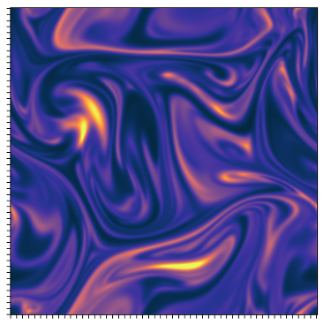

Statistical Theory for the Microscopic Ocean

What does the ocean look like on scales of 1 micron to 1 centimeter? Here, I am developing a quantitative theory to account for the effect of microorganisms swimming and dieing in generating sustained microscopic fluctuations.